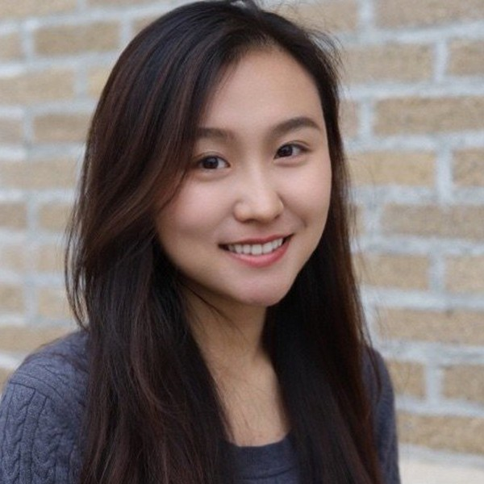

食品科学 · 生物技术 · 创新
你好，我是 Zhixin。
我在 Puratos 负责北美市场的食品科技创新，在发酵、蛋白体系和生物技术领域建立合作，把新想法带进烘焙、甜点和巧克力。
大费城地区


博士康奈尔大学 食品科学与技术
4同行评审论文
4种语言英语、法语、中文（普通话）流利，西班牙语初级
关于我
2022 年 12 月，我在康奈尔大学获得食品科学与技术博士学位，专攻生物技术和乳品科学，并辅修应用经济学。我的研究方向是利用工程酶把食品工业的副产物转化为稀有糖。
我出生在中国，在蒙特利尔长大，现在定居美国，是一名骄傲的华裔加拿大人。我在麦吉尔大学获得食品化学学士学位，从此踏上食品科学之路。此后我在加拿大和美国带领食品研发团队，深耕产品开发和感官评价。我还接受过专业训练，是乳制品和甜味剂的专家级品评员。